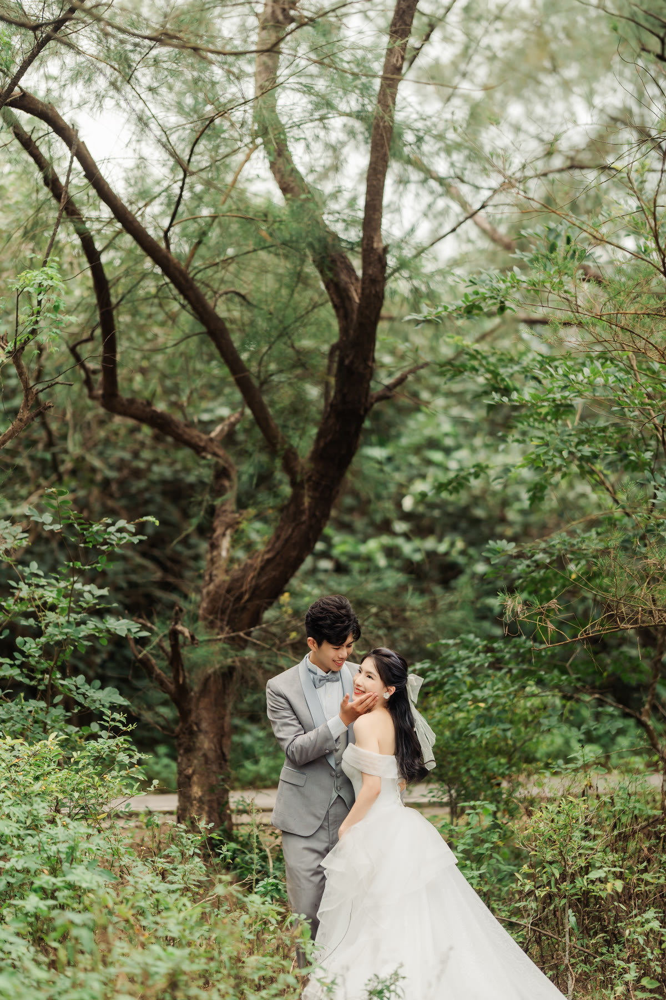
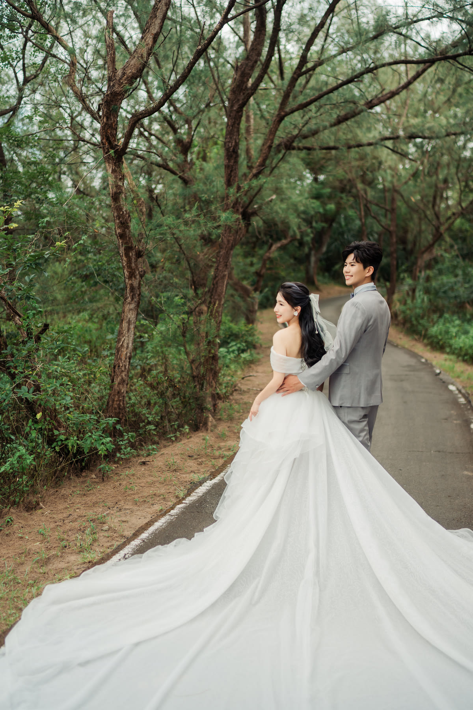
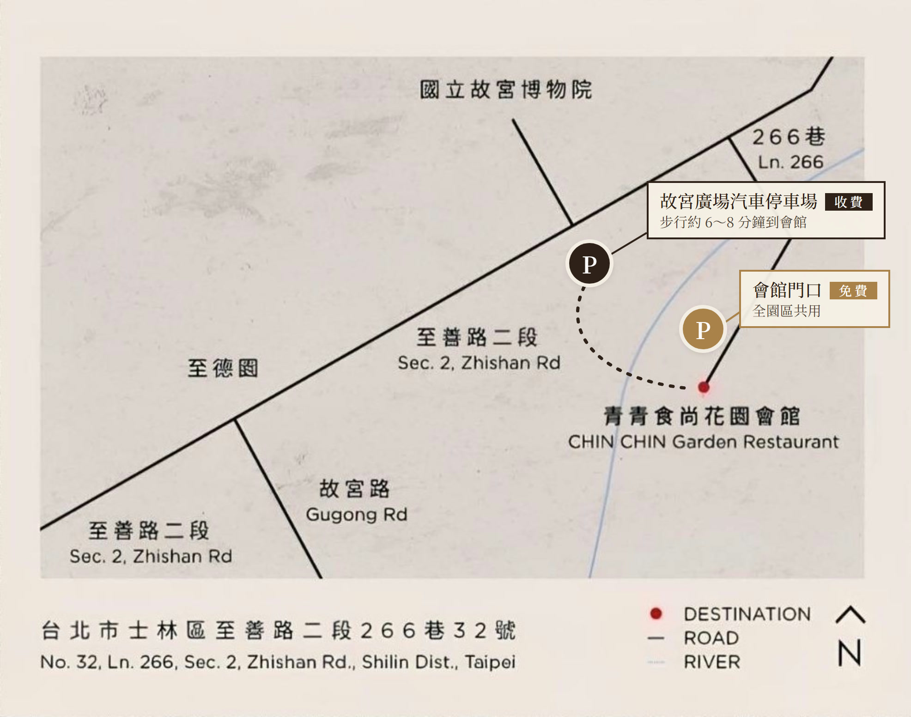

我們的故事，在 2021 年 1 月 9 日悄悄起筆。
六年後的同一天，
想邀請您一起見證，
我們翻開新的一頁。
在 LINE 裡按了沒反應？請改用 Safari 或 Chrome 開啟這個網頁再試一次。
從「士林捷運站」搭專車到會館，
輕鬆又方便。
車程約 15 分鐘。
證婚儀式 17:30，宴客 18:00。
想參加證婚儀式，請搭 16:45。
只參加宴客，請搭 17:15。
請提早 10 分鐘到乘車處等候。
17:15 班次抵達時證婚儀式剛好開始；17:45 班次剛好 18:00 抵達，18:15 班次抵達時宴客已開始。


點圖可放大 停車位置為示意，請依現場指示
青青食尚花園會館
台北市士林區至善路二段 266 巷 32 號
園區皆為平面，不需要爬階梯。
若需要協助，可向門口的會場人員詢問「園區接運車」（類似高爾夫球車）。
就在會館門口，位置圖上金色的 P。
全園區共用，約 100～150 個車位，請依現場工作人員指揮停車。
我們配合 55688 計程車，現場有車等候，不必打電話，免費搭乘。
上車時，請把「賓客乘車證」出示給司機看。
捷運淡水線至士林站，轉乘公車 815、255、304。
小型公車 18、19，假日休閒公車 101，至故宮博物院站下車。